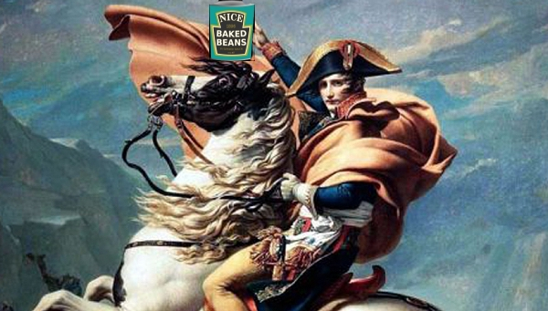

I have thought a lot about the question of what is the best food. I am willing to die on the following hill:
"The canned chickpea is the best food"
Food goodness can be well measured along the following five metrics: Taste, price, shelf life, nutrition, prep time.
The canned chickpea is the only food I know which excells in all 5 categories.
The canned chickpea offers a version of the intergalactic hitchhiker's towel to the pedestrain earthwalker.
The canned chickpea will be there when you get home and need a quick, tasty, nutrutious snack. It will be there when you
want to create an elaborate salad. It will be there for you tomorrow, and it will be there just as much
if you forget it and let it wait in the pantry for a couple of years.
The canned chickpea has an outstanding lower bound for taste. Post draining, you can eat it right from the can and it will taste decent. You can alleviate the taste a lot by adding salt and olive oil. Low cost, incredibly fast.
Chickpeas are cheap. Really cheap. Yesterday I bought 400g cans of chickpeas for 60ct a can.
Near inifite.
Actually Napoleon enabled the invention of canned food. He recognized that an army 'travels on its stomach' and that
an effective army required good, unspoiled food, even when far away from home. (he also took great care of everybody's shoes,
for an army travels not only on its stomach, but also on its feet).
To ensure the presence of good, unspoiled food whereever his army was, he set out a price of 12.000 Francs. Although he did not
know how it worked, Nicolas Appert invented canning. Half a century later, Lois Pasteur provided the corresponding theory.
One of many available sources

As you have surely experienced yourself, shelf life is important outside of the Napoleonic army. Few things hit the esprit d'Corps as
hard as looking forward to your favourite snack, only to find it spoilt. Never will this pain fall upon you if you choose
your favourite food wisely, if you choose the canned chickpea.
The canned chickpea will stay good for longer than the container that holds your soul, so no need to worry.
However, there is need to celebrate: You can buy chickpeas in bulk. Economies of scale apply. You do not need to take care of them.
You will always have food at home when you get home.
[Chickpeas are] a nutrient powerhouse, budget-friendly protein and versatile choice for year-round healthy eating. Naturally low in saturated fat, loaded with nutrients Nearly three-quarters of Americans exceed the daily recommended amount of saturated fat, much of which comes from animal-based proteins, such as beef, pork and full-fat dairy products. One of the best ways to lower saturated fat intake is to add more plant-based proteins, including chickpeas, to your diet. While naturally low in saturated fat, chickpeas are nutrient-dense. They provide nearly 20 grams of protein in a ½-cup serving and 5 grams of dietary fiber. Chickpeas also are a source of folate, iron, vitamin C and phosphorus.
Canned chickpeas require no cooking. They taste great the way they are. Adding olive oil, salt, and lemon again requires no
cooking time whatsoever, but elevates the chickpeas already heavenly flavour to the olymp of food. Again, with very little
cooking time you can make a delicious salad, for example by adding a dressing of dijon mustard (Fun link showing
that france ran out of mustard, fun example of the importance of globalisation).
A towel is just about the most massively useful thing an interstellar hitchhiker can carry. Partly because it has great practical value. You can wrap it around you for warmth as you bound across the cold moons of Jaglan Beta; you can lie on it on the brilliant marble-sanded beaches of Santraginus V, inhaling the heady sea vapours; you can sleep under it beneath the stars which shine so redly on the desert world of Kakrafoon; use it to sail a miniraft down the slow heavy River Moth; wet it for use in hand-to-hand combat; wrap it around your head to ward off noxious fumes or avoid the gaze of the Ravenous Bugblatter Beast of Traal (a mind-bogglingly stupid animal, it assumes that if you can't see it, it can't see you — daft as a brush, but very very ravenous); you can wave your towel in emergencies as a distress signal, and of course you can dry yourself off with it if it still seems to be clean enough.
More importantly, a towel has immense psychological value. For some reason, if a strag discovers that a hitchhiker has his towel with him, he will automatically assume that he is also in possession of a toothbrush, washcloth, soap, tin of biscuits, flask, compass, map, ball of string, gnat spray, wet-weather gear, space suit etc., etc. Furthermore, the strag will then happily lend the hitchhiker any of these or a dozen other items that the hitchhiker might accidentally have "lost." What the strag will think is that any man who can hitch the length and breadth of the Galaxy, rough it, slum it, struggle against terrible odds, win through and still knows where his towel is, is clearly a man to be reckoned with.
Hence a phrase which has passed into hitch hiking slang, as in "Hey, you sass that hoopy Ford Prefect? There's a frood who really knows where his towel is."